Ⅶ-7. 도움말
Ⅶ-7-1. 도움말
센스리더의 도움말을 보여줍니다.
도움말의 실행은 센스리더 창이 열려진 상태에서 [도움말] -> [도움말] 메뉴를 선택하거나 <F1> 키를 누르면 됩니다.
센스리더 창이 열려져 있지 않다면 아무 곳에서나 <Insert-F1> 키를 누르면 센스리더 도움말이 호출됩니다.

센스리더의 도움말은 일반적인 인터넷 문서(HTML) 형태로 제작되어 화살표 키를 이용해 편리하게 내용 파악이 가능합니다. 도움말을 읽는 도중 링크를 만났을 때 <Enter> 키를 누르면 해당 챕터로 바로 이동이 됩니다.
또한, 문서 내에서의 편리한 이동과 내용 파악을 용이하게 할 수 있도록 제목은 헤딩으로 설정되어 있습니다. 센스리더의 헤딩 이동 기능(H)을 이용하면 다음 챕터로 바로 이동이 가능합니다.
Ⅶ-7-2. 센스 리더 업그레이드
센스리더 업그레이드 정보가 있는 경우에는 [도움말] 메뉴의 [센스 리더 업그레이드] 메뉴를 사용해 언제든 센스리더를
업그레이드 시킬 수 있습니다.
업그레이드 대화상자가 나타나면 '업그레이드' 버튼과 '확인' 버튼을 차례대로 눌러 자동 업그레이드를 진행해 줍니다.
Ⅶ-7-3. 업그레이드 자동 확인
업그레이드 자동 확인은 ENTER키를 이용하여 선택 또는 해제 할 수 있으며, 해당 기능을 선택하면 항상 자동으로 새 업그레이드가 있는지 확인 합니다.
특정 버전에서 더 이상의 업그레이드를 원하지 않는 경우 해당 기능을 해제하면 새 버전에 대한 업그레이드를 더이상 확인하지 않게 됩니다.
업그레이드 자동 확인 기능은 기본적으로 선택되어 있으며 v6.8 이상에서 지원 합니다.
Ⅶ-7-4. 사용자 정보 입력
사용자 정보는 센스리더의 정식 사용자를 확인하기 위한 ID와 비밀번호를 의미합니다.
센스리더를 설치한 이후 처음 실행하거나 사용자 정보가 저장되지 않은 상태에서 센스리더를 실행하면 사용자 정보 입력 대화상자가 나타나 정보 입력을 요구합니다. 이 곳에 센스리더 구입시 발급받은 ID와 비밀번호를 입력합니다.
다음의 절차에 따라 사용자 정보를 입력합니다.

① 센스리더의 [도움말]->[사용자 정보 입력] 메뉴를 실행합니다.
② '아이디' 편집창에 발급받은 아이디를 입력합니다.
③ <Tab> 키를 눌러 '비밀번호' 편집창으로 이동하여 비밀번호를 입력합니다.
④ '저장' 체크상자에서 입력한 아이디와 비밀번호를 컴퓨터에 저장할지 여부를 선택합니다. 입력한 정보를 임시적으로 사용하고자 할 경우에는
체크상자를 선택하지 않는 것이 좋습니다.
⑤ '확인' 버튼을 눌러 대화상자를 닫습니다.
이 때, ID나 비밀번호가 잘못 입력된 경우에는 오류 대화상자가 출력됩니다.
참고사항
1. 이 기능이 정상적으로 실행되기 위해서는 컴퓨터가 반드시 인터넷에 연결되어 있어야 합니다.
2. 오류가 발생한 경우 ID와 비밀번호가 정확한지 확인해 보십시요.(영어 대소문자 구분)
3. 인터넷 공유기를 사용하거나 사설 네트워크에 있을 경우 인증 포트가 막혀서 사용자 정보 입력이 되지 않을 수 있습니다.
이 경우 네트워크 관리자에게 문의하여 'xvtech.com'을 대상으로 '8000'포트 또는 '443'포트의 허용 신청 후 이용해 주시기 바랍니다.
해당 설정을 통해서도 문제가 해결되지 않는 경우 회사로 문의를 하십시요.
사용자 정보 입력 기능은 센스원 리더에서는 사용하지 않는 기능입니다.
Ⅶ-7-5. 사용자 정보 삭제
센스리더는 사용자정보 입력시 '저장' 체크박스를 선택했다면 사용자정보를 컴퓨터에 저장합니다.
현재 컴퓨터에 바르지 않은 사용자 정보가 입력되어 있거나 의도와 다르게 사용자 정보가 저장된 경우 다음의 방법을 사용해 사용자 정보를 삭제할 수 있습니다.
① [도움말] 메뉴에서 [사용자 정보 삭제] 메뉴를 실행합니다.
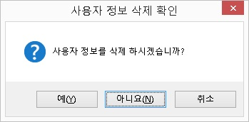
② 삭제 여부를 다시 한 번 확인하는 대화상자가 나타나면 '예' 버튼을 누릅니다. 기본은 '아니오' 입니다.
③ 저장되어 있던 사용자 정보가 삭제되고 대화상자가 닫힙니다.
* 사용자 정보를 삭제한 후에는 센스리더가 데모 버전으로 동작하게 됩니다. 위에서 제시된 사용자 정보 입력 과정에 따라 다시 사용자 정보를
입력합니다.
사용자 정보 삭제 기능은 센스원 리더에서는 사용하지 않는 기능입니다.
Ⅶ-7-6. 비밀번호 변경
센스리더의 비밀번호를 변경하는 기능입니다.
비밀번호를 변경하고자 할 때에는 다음의 방법을 사용해 프로그램에서 직접 비밀번호를 변경할 수 있습니다.
① [도움말] 메뉴의 [비밀번호 변경] 메뉴를 실행합니다.② 잠시 후, '비밀번호 변경' 대화상자가 나타납니다. 대화상자 내에는 3개의 편집창이 있습니다.
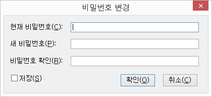
③ '현재 비밀번호' 편집창에는 지금 사용하고 있는 비밀번호를 입력합니다.
④ '새 비밀번호' 편집창에는 변경을 원하는 새로운 비밀번호를 입력합니다.
⑤ '비밀번호 확인' 편집창에는 새 비밀번호를 다시 한 번 입력합니다.
⑥ '저장' 체크상자에서 변경한 내용을 현재 컴퓨터에 저장할지 선택합니다. 기본값은 해제입니다.
⑦ '확인' 버튼을 눌러 입력한 내용을 적용시킵니다.
* 비밀번호 변경은 반드시 인터넷이 정상적으로 연결되어 있어야 수행할 수 있습니다. 그렇지 않으면 이 기능은 사용할 수 없습니다.
Ⅶ-7-7. 인증서 생성
센스리더는 기본적으로 하드웨어 락이 없이 디지털 인증서를 사용하여 정품 인증을 하게 됩니다.
인터넷에 연결된 컴퓨터 사용자라면 사용자 정보를 입력하는 것만으로 인증 작업은 마무리되며, 이 때 센스리더는 내부적으로 인증서를 생성해서
관리하게 됩니다.
디지털 인증서는 가장 최근에 인증을 받은 시점부터 30일 동안 유효합니다. 따라서 컴퓨터 이상이나 회선 불량으로 인터넷 연결에 문제가
발생했다 하더라도 센스리더 사용에는 문제가 발생하지 않습니다. 하지만 인터넷을
상당 기간 사용하지 않는 경우라면 수동으로 인증키를 발급받으셔야 합니다.(노트북, 넷북 등의 모바일 기기에는 수동 인증키가 발급되지 않습니다.)
수동으로 인증서를 생성하는 과정은 다음과 같습니다.
① <Ctrl-\(백슬래시)> 키를 눌러 센스리더의 메인 윈도우를 엽니다.
② <Alt-H> 키를 눌러 도움말 메뉴를 열고 [센스 리더 정보] 메뉴를 찾아 실행합니다.
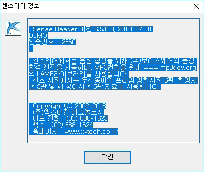
③ <센스 리더 정보> 대화상자가 나타나면 <위/아래 화살표> 키를 이용하여 센스리더의 버전과 4자리 혹은 5자리로 구성된 인증번호를 확인합니다. 인증번호는 사용자 정보와 하드웨어 정보를 조합하여 생성되기 때문에 컴퓨터마다 각기 다른 인증번호가 생성됩니다.
④ (주)엑스비전 테크놀로지의 상담원과 전화 연결하여 사용자 ID와 인증번호를 알려 주시면 영문과 숫자의 조합으로 된 32자리의 인증키를 발급해 드립니다.
⑤ 센스리더 [도움말] 메뉴의 [인증서 생성] 메뉴를 실행합니다.
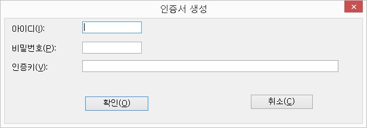
⑥ '인증서 생성' 대화상자가 출력되면 사용자 정보와 인증키를 입력한 다음 '확인' 버튼을 누릅니다. 그러면 내부적으로
인증서가 컴퓨터에 저장됩니다.
⑦ 센스리더 [도움말] 메뉴의 [사용자정보 입력] 메뉴를 실행합니다.
⑧ '사용자정보 입력' 대화상자가 열리면 사용자 아이디와 비밀번호를 입력하고 '저장' 체크상자를 선택한 후 '취소' 버튼을 누릅니다.
⑨ 마지막으로, 센스리더를 종료한 다음 재실행합니다.
* 수동으로 인증서를 생성한 컴퓨터가 인터넷에 연결되면 수동인증서는 삭제되고 인터넷 인증으로 자동 전환됩니다.
인증서 생성 기능은 센스원 리더에서는 사용하지 않는 기능입니다.
Ⅶ-7-8. 기술 지원
센스리더나 BrailleNote 사용중 질문 및 건의사항을 온라인으로 직접 관리자에게 전송하는 기능입니다. 사용자가 질문과
건의사항을 작성하면 해당 내용이 관리자에게 메일로 전달되며, 관리자가 답변한 내용은 답변 보기 기능을 이용하여 사용자가 확인할 수 있습니다. 또한, 찾기 기능을 통하여 등록한 아이디나 제목으로 이전에 등록했던 질문과
답변을 검색할 수도 있습니다.
[도움말] 메뉴의 [기술 지원] 메뉴를 실행하면 질문 및 건의, 답변 보기, 찾기 등의 세 가지 하위 메뉴가 나타나며, 이 중 필요한 메뉴를 실행합니다.
센스원 리더에서는 질문 및 건의 메뉴로 실행시 바로 글 작성 게시판으로 이동되며, 해당 게시판 내에서 질문 및 건의와 답변이 이루어집니다.
1. 질문 및 건의
사용자의 질문 및 건의사항을 관리자에게 전송하는 기능입니다. 메뉴를 실행하면 질문 및 건의를 작성할 수 있는 대화상자가 나타납니다. <Tab> 키를 이용하여 제목, 내용, 요청사항 등의 항목으로 이동하면서 내용을 작성합니다. 현재 사용 중인 제품과 질문 및 건의사항의 선택은 방향키를 위,아래로 이동하여 선택하도록 합니다.
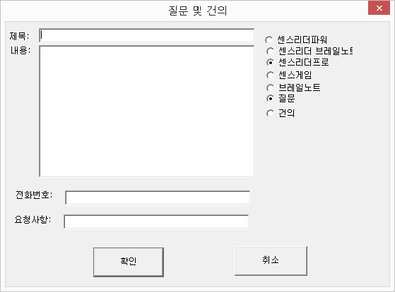
질문 및 건의사항 작성이 모두 끝나면 '확인' 버튼을 누릅니다. 질문 및 건의사항이 정상적으로 등록되었다면 "질문 및 건의사항이 정상적으로 등록되었습니다"라는 메세지 대화상자가 출력됩니다.
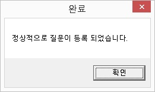
2. 답변 보기
사용자의 질문 및 건의사항에 대한 관리자의 답변을 확인하는 기능입니다. 관리자가 답변을 한 경우 목록에 답변 항목이 새롭게 추가됩니다.
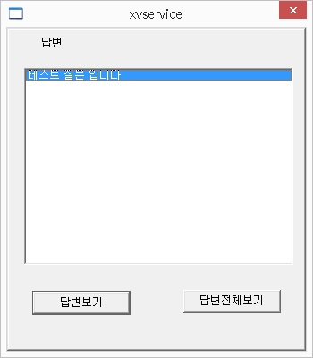
확인을 원하는 목록에 위치한 후, <Tab> 키를 눌러 '답변 보기' 버튼이나 '답변 전체 보기' 버튼을 눌러 답변 내용을 확인하도록 합니다.
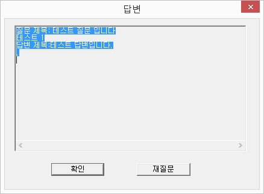
만약, 답변 내용 확인중 답변에 대한 추가적인 질문이 있을 경우 '재질문' 버튼을 누르면 재질문을 작성하기 위한 대화상자가 출력됩니다.
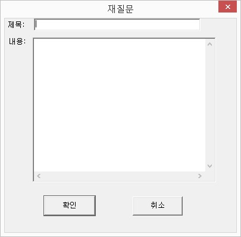
'답변 보기' 버튼은 마지막의 질문과 답변만을 보여주며, '답변 전체 보기' 버튼은 처음부터 모든 질문과 답변의 내용을 표시해 줍니다. 답변 확인 이후에는 해당 항목이 목록에서 사라집니다.
3. 찾기
찾기 방법은 '사용자 아이디로 검색'과 '제목으로 검색' 등의 두 가지 방식이 있습니다. 사용자 아이디로 검색을 선택하면 지금까지 사용자가 등록한 모든 질문 및 건의사항이 목록에 표시되며, 제목의 특정 문자열로 검색을 하고자 한다면 '제목으로 검색' 옵션을 선택한 다음 검색어 편집창에 원하는 문자열을 입력합니다.
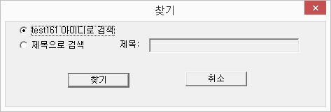
목록상자에는 항목에 따라 질문 및 재질문, 완료 등의 상태가 표시됩니다.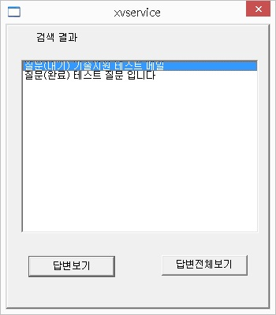
Ⅶ-7-9. 센스 리더 정보
센스리더의 버전 및 적용 날짜, 패키지 종류, 인증 번호 등의 정보가 표시됩니다. 또한 저작권 정보와 회사의 홈페이지, 주소, 연락처 등도 함께 확인할 수 있습니다.
Ⅶ-7-10. 기타
[도움말] 메뉴에는 추가적으로 다음과 같은 메뉴들이 있어 프로그램 사용에 도움을 줍니다.
1. 시스템 정보
현재 시스템의 메모리와 하드 드라이브의 크기, 그래픽 카드의 종류, 해상도 등의 정보를 보여줍니다.
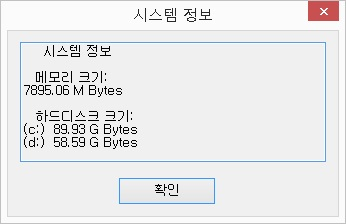
2. XVision 홈페이지
(주)엑스비전 테크놀로지의 홈페이지로 연결해 줍니다.
3. 삼성 애니컴 홈페이지
센스리더 강의와 일반 컴퓨터 강의를 들을 수 있는 '삼성애니컴' 홈페이지로 연결해 줍니다.
4. 개인정보 처리방침
(주)엑스비전테크놀로지 개인정보 처리 방침에 대한 내용을 자세히 확인하실 수 있습니다.